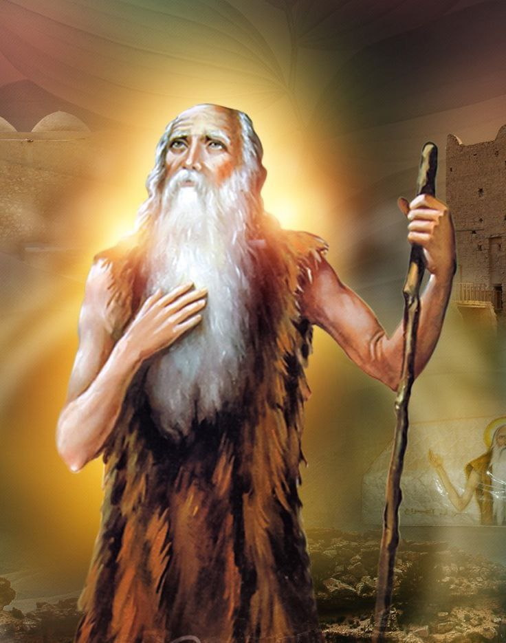

قصص قديسين
الانبا انطونيوس الكبير، الشاب الغني اللي ساب الدنيا كلها وبقى أب للرهبان في العالم كله!...
اقرأ القصة كاملة...مارمرقس الرسول.. التلميذ اللي حوّل مدينة الإسكندرية من وثنية مضطربة لواحدة من أعظم مراكز الإيمان في العالم!...
اقرأ القصة كاملة...مارجرجس الروماني، فارس مغوار وقف قدام إمبراطورية كاملة وماخافش غير من ربنا!...
اقرأ القصة كاملة...
أم النور، التي ولدت السيد المسيح بالجسد، نموذج الطهارة والتسليم الكامل لإرادة الله...
اقرأ القصة كاملة...القديسة مارينا, طفلة صغيرة تواجه الظلم بشجاعة، وتعلمنا أن الإيمان أقوى من أي محنة…
اقرأ القصة كاملة...

القديس الانبا بولا, شاب ترك كل شيء وراءه، وغاص في قلب الصحراء ليعيش حياة مليانة سلام وحكمة…
اقرأ القصة كاملة...